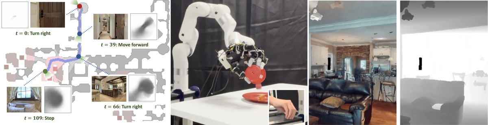
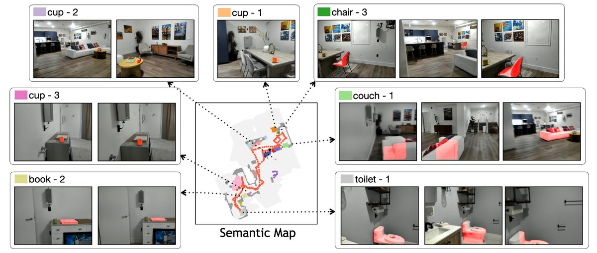
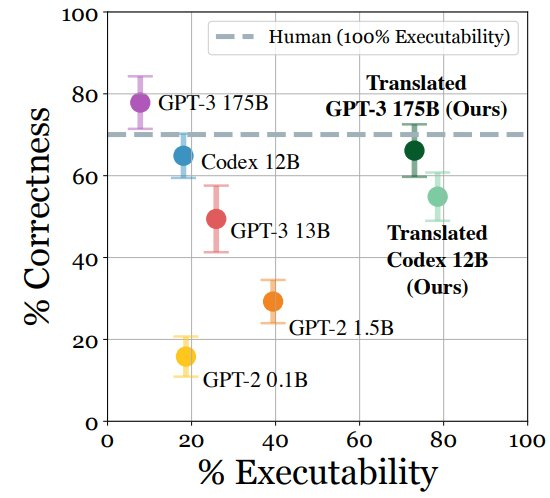
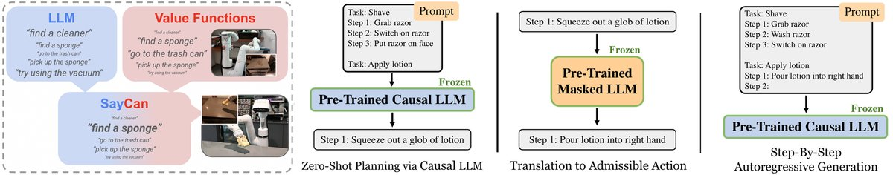
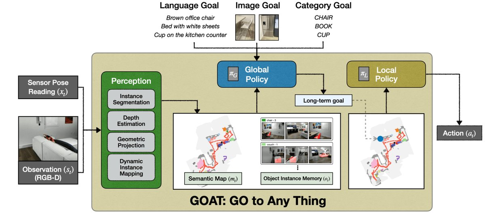
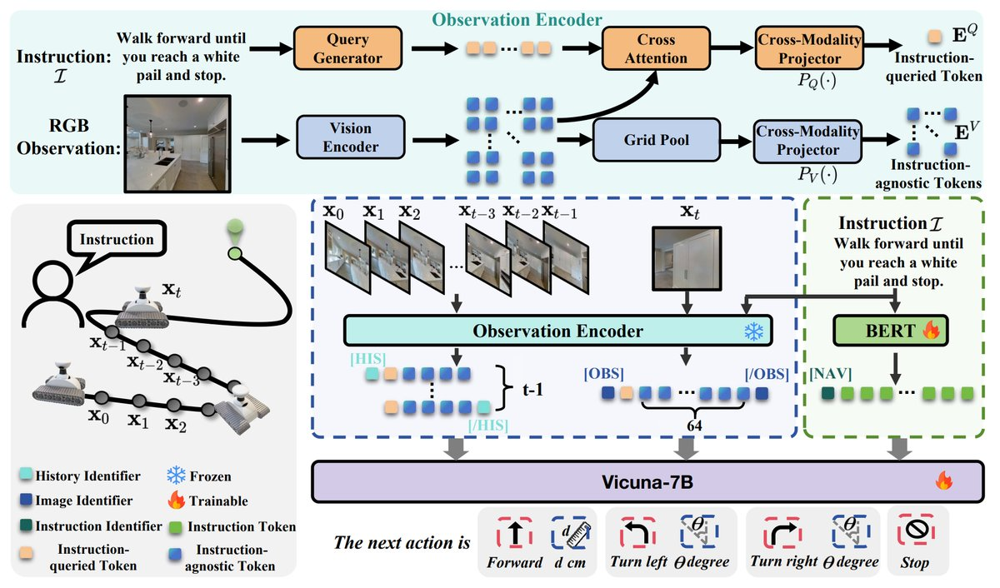
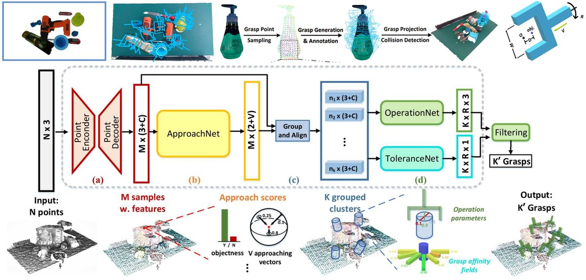
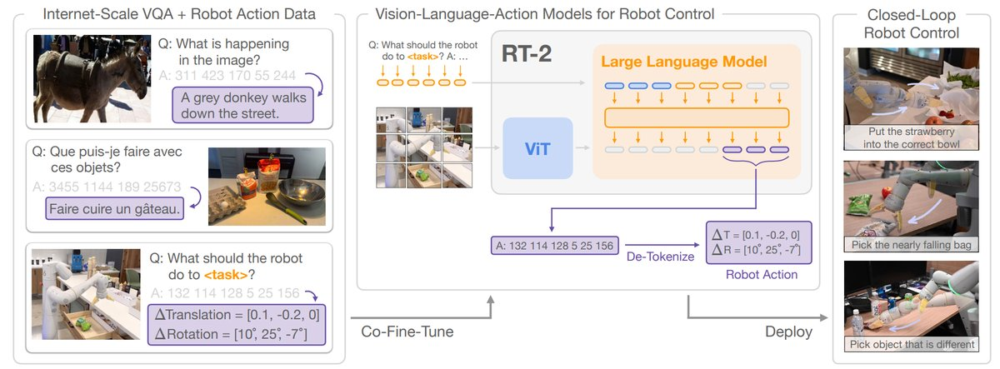

Embodied AI简述
本文为大家简单梳理具身智能（Embodied AI）当前的不同发展方向，包括规划、导航、操作和数据。
1 引言
具身智能（Embodied Artificial Intelligence） [14] 是指一种基于物理身体进行感知和行动的智能系统，其通过智能体与环境的交互获取信息、理解问题、做出决策并实现行动，从而产生智能行为和适应性。

在具身智能的发展道路上，从早期的机器人学和仿生学领域发展成的跨学科方法和技术，走到深度学习快速发展的今天，研究人员开始尝试收集海量的数据以及利用强大的计算能力，设计和训练具备感知和行动能力的智能系统，并将这种交互能力迁移到真实世界、使得智能体进行自主决策和执行物理任务。今天的具身智能与传统的机器人学最显著的区别就在于，具身智能的研究由数据驱动（data-driven），而非人工驱动，数据驱动的方法希望机器人系统从海量的交互数据中学习物理世界的规律，进而涌现出新的概念和行为。
举例而言，当老人在家里想要喝水时，希望让身边的智能家用机器人为她倒一杯水喝，该机器人将首先定位到家里的饮水机，然后通过机器人下肢移动到饮水机旁边，利用自身的上肢拿起杯子并接一杯水，最后端着水杯返回到老人旁边。
以这个例子为代表，本报告将围绕构建一个具身智能体最关键的三个要素进行展开，即：
- （1）如何让机器人进行思考和规划（Section 2）：当知道老人的需求时，如何分解这个任务来一步步执行。
- （2）如何让机器人在环境中导航和移动（Section 3）：如何规划路线移动到饮水机旁边并返回。
- （3）如何让机器人与环境进行操纵和交互（Section 4）：怎么拿起水杯等一系列过程。

2 规划
2.1 任务规划定义
对于任务规划而言，给机器人一段自然语言指令，它将这个指令一步步分解为一串机器人可以执行的步骤。这背后假设机器人一次只能执行一个特定任务。为了完成一个最终目标，它需要不断执行一个个特定的任务，例如为了完成接水的任务，机器人需要将这个任务拆解为"（1）前往饮水机。（2）拿起水杯。（3）打开饮水机接水。（4）关闭饮水机。（5）返回"，才能用 5 个步骤完成这个任务。
2.2 以大语言模型为核心的任务规划
对于任务规划来说，早期的工作主要探讨语言模型能否完成任务的拆解和规划，随着具身智能和大语言模型的发展，问题核心逐渐转向如何让大语言模型能够在真实世界中也能进行任务的拆解和规划。下面介绍两篇工作，分别是早期直接利用大语言模型进行规划的方法，以及到真正结合大语言模型和机器人来完成室内家居任务的工作。
2.2.1 LLM-Planner: 基于大语言模型的任务规划
由于像 GPT-3 [3] 一类的大语言模型迅猛发展，模型中蕴含的世界知识为人类所需要的任务规划提供了强大的先验，LLM-Planner [9] 证明了这些大语言模型能够以零样本泛化或上下文学习的方式完成具身智能所需要的任务规划，以自回归的方式进行规划和映射，保证每一步的规划结果都是机器人可执行的步骤。
at* = argmaxat p(lat | I, lat-1, ..., la0)
其中 l 是任务的语言概述，lat 是语言模型在第 t 步输出的任务规划，这里略去了文章中一些处理方式，包括利用 Bert 的特征相似度匹配的方式来把输出翻译成机器人可执行的动作、每步生成多个规划选最优规划等等。这篇工作验证了大语言模型能够为具身智能的任务提供合理的规划，并通过一些映射方式使得规划可执行，但这篇文章的实验局限在 VirtualHome [11] 的虚拟环境中，并且假设每个规划都能完美执行，仅仅验证了语言模型的理论作用。

2.2.2 SayCan: 由环境状态影响的任务规划
SayCan [10] 则是一篇更加完备的工作，它验证了 LLM 的规划能力能够让机器人在现实世界中进行探索，让语言模型结合视觉状态共同决定规划结果，并收集了相当丰富的机器人行为数据训练了控制器，能够在数据收集的家用场景中完成用自然语言控制的导航和简单的拿起/放下类操作任务。与 LLM Planner 比起来，SayCan 的建模增加了当前的环境状态：
at* = argmaxat p(cat | la, st) · p(lat | I, lat-1, ..., la0)
其中 st 是 t 步时的环境状态，cat 是在状态 st 时按照 la 执行任务的价值，在 SayCan 中是用一个图像 + 文本表征到实数的函数进行建模（value function），本质上是让大语言模型的规划与现实世界的状态相结合，希望算法系统预判规划的结果。这个模型也可以考虑用世界模型（world model）做状态的改变来进行建模。这篇工作之后，Google 在机器人基础（大）模型的探索上一去不复返，基于 SayCan 收集的遥操作数据，后续有一系列工作的出现，例如端到端小模型 RT-1 [1]、多模态大模型与操作模型 RT-1 相结合的 PaLM-E [5]、端到端大模型 RT-2 [2] 等。

3 导航
3.1 导航的定义
通常给智能体一个目标，例如给定一段文本描述、目标图像、目标物体类型，希望它能够移动到目标所在位置。一般而言，智能体以轮式机器人为主，也有四足机械狗、双足机器人等类型，面向不同的复杂场景时也需要为机械狗的移动姿态做出限制和建模。
3.2 模块化设计及端到端的导航
目前导航的工作粗略分为两类：无需数据训练的模块化设计系统，以及端到端的视觉语言导航模型，下面分别就两类方法各介绍一篇工作。
3.2.1 GOAT：模块化设计的导航方法
GOAT [4] 是一篇进行了完整工程化的导航系统，能够支持多模态目标的终身导航，并且支持多种机器人的导航。其由四个组件组成：全局策略（Global Policy）、局部策略（Local Policy）、感知系统（Perception）、语义地图和物体记忆（Semantic Map and Instance Memory）。每个模块的作用如下：
- 全局策略：根据多模态的目标，在当前的语义地图和物体记忆中进行匹配，如果能在地图中找到目标的话，记录目标点 x，准备开始导航；若不能找到目标点的话，进行地图的边界区域探索，以边界点为目标点。
- 局部策略：根据目标点 x 和当前的位置 p，规划下一步具体的行动（例如左转 30 度，前进0.5 米），并进行执行。
- 感知系统：装载深度和一般摄像头，并配有开放词汇检测和分割模型，能对环境做出感知。
- 语义地图和物体记忆：语义地图会根据环境和感知系统来构建带有物体标签的地图，物体记忆会记录所有拍摄过的图像并存入内存，用于环境的记录。
通过四个模块的组合和闭环控制，智能体可以在陌生的环境中直接进行多模态目标的导航。GOAT 的优缺点都很明显：（1）优点：不需要数据训练，直接由现成的模型组合搭建系统架构即可适应到不同的室内环境中，并且可以模块化增删组件来提供更多的功能。（2）缺点：木桶效应严重，作为模块化系统，整体性能受到个别模块的限制，例如开放词汇分割的模型能力仍然较弱。

3.2.2 NaVid：端到端多模态导航大模型
NaVid [13] 利用模拟仿真的导航数据让多模态大模型能够输出下一步具体动作。其接受全部历史视觉信息输入和语言指令输入，并用更多的 token 数量强调当前视觉信息的重要性，让大语言模型根据视觉和语言 token 来预测连续的下一步行动（例如前进 3 米）。具体而言，它基于 LLaMA-VID 初始化，遵循 InstructBlip 的架构，对单帧 RGB 提取视觉 token 以及 instruction-aware token，在模拟环境中收集了 510k 的导航相关的轨迹 + 推理数据，以及 763k 的互联网数据去进行训练。最终能够在模拟环境中取得还不错的结果，并且可以在真实世界中遵循指令去做一些简单的移动。

这种端到端导航大模型的局限性可能较大：（1）其执行复杂任务的能力和可用性不如模块化导航系统，并且其泛化性也有待考证。由于没有显式地图，很难执行长程、复杂的导航任务，一个极端的例子是走出一个复杂的迷宫，或许什么时候导航大模型能够顺利走出一个迷宫才能认为这条路是可行的。（2）性能弱且可解释性弱，相较于模块化设计能够容易定位出问题的环节并针对优化，端到端导航大模型可能较难定位最终决策出错误的原因。性能弱的一部分原因是仅仅使用了 RGB 的数据，但 CLIP 的空间感知能力和深度理解能力都相对较弱，因此输入端能代表 3D 的深度信息还是有必要的。（3）数据采集困难：不同于自动驾驶能够从用户市场中获得海量的训练数据，这种小型机器人的数据收集成本更加高昂，很难在数据上进行 scaling up 并验证端到端模型的上限。
4 操作
对于抓取类物体操作而言，目前的有很多种技术路线都在探索，报告只给出 GraspNet 和 RT-2 两种技术路线的简单讨论，即视觉-机器人尽可能解耦的方法，以及端到端物体操作大模型。
4.1 GraspNet：基于物体姿态表征的通用物体抓取
GraspNet [7] 希望解决的是多物体场景的桌面通用抓取任务，输入一张 RGBD 图片，为其中每个点输出可行的 6DoF（3DoF 方向向量 V，以及转角 R、夹子宽度 M 和抓取距离 D）的抓取姿态。

任务定义清楚后，首先需要思考的问题是需要怎样的训练数据。论文系列作者提出一个想法，物体能否被抓取的核心要点不是物体整体的外形，而很大程度上取决于被抓取的局部几何外形（两爪机械臂和物体的接触面），而每个物体的表面都具备丰富的这种局部几何特征，因此很可能只需要在少量物体上采集海量的局部抓取点，并生成可行的抓取姿态，在这种数据上就可以训练出通用的姿态预测器。他们通过比较不同数量物体训练出来的姿态预测器发现，这个想法是可行的，更少的物体标注更多的姿态可以学到和更多物体相当的局部几何特征。
因此对于数据采集而言，文章针对 144 个具备高质量 3D mesh 的物体采集了超过 1B 的抓取姿态数据。具体而言，对 3D 模型表面采样点后，对每个点为中心的球面，采样海量的方向向量 V，在每个方向向量上采样 R、M 和 D，并根据力学分析方法，假设摩擦系数来判断这个抓取姿态是否可靠，最后在单个物体上标注 3M-9M 的姿态。对于每个场景的图像输入而言有多个物体，文章额外标注每个物体的 6D 方框姿态，加以相机内外参数的变化即可统一坐标系。
在模型设计方面，采用了模块化设计的端到端训练方法，首先 ApproachNet 预测场景点云中每个点的性值：是否是物体，以及通过分类来判断方向向量 V 是否可行；随后的 OperationNet 负责在物体点中可行的方向向量上预测 R、M 和 D，ToleranceNet 为这个预测抓取姿态是否鲁棒的置信度，来选择最终的预测结果。最后每个点都会预测一系列抓取姿态并完成监督训练。
AnyGrasp [6] 基于 GraspNet 进行了更精细的建模和时序抓取上的拓展，从 demo 来看基本实现了桌面级的通用物体抓取任务。
这类方法尽可能将视觉端和机器人学的路径规划解耦开，把泛化性尽可能放在视觉能力上，然后结合机器人学稳定的路径规划能够取得极佳的抓取效果。其中的核心问题是在视觉端如何定义一个对机器人有用的中间抓取表征，并能够有效地收集海量数据来完成通用模型的训练。
4.2 RT-2：端到端物体操作大模型
RT-2 [2] 是 Google 在端到端多模态操作大模型上的探索工作之一，基本想法很简单，对于 6DoF 的夹爪机械臂，输入语言指令和当前 RGB 视觉图像，利用 ViT+LLM 的多模态大模型直接输出末端控制器的位移和旋转。其用了 1B+ 的 VQA 数据混合 130K 的机器人轨迹数据进行训练，能够超过以往 R3M、RT1 一类的方法。但是这种方法不具备通用的泛化性，换一个环境就很难达到数据采集房间实验的效果，并且数据收集的成本代价相当高昂，最终实现的效果来看，机械臂的动作也颤颤巍巍，很难称得上是成功的抓取模型。

相比于 GraspNet 的技术路线而言（尽管它不具备接受语言指令的能力，但利用基础视觉模型对场景拓展语义是很容易的），RT-2 的实验结论说明仅基于 RGB 视觉输入时，基于多模态大模型的端到端物体操作道阻且长。
5 数据
对于希望做数据驱动的具身智能而言，目前最大的挑战之一就是数据，其核心需要思考两个问题，第一个是定义数据的形式，第二是选择收集数据的方案。
（1）数据类型：选定机器人品种和传感器类型，执行相应操作来完成数据的收集。机器人的品种有很多，包括但不限于轮式机器人、双足机器人、四足机器人、人形机器人、灵巧手、夹爪机械臂等，广义的机器人还有各类自动驾驶的机械，例如汽车、外骨骼、无人机等各类机器人。机器人可配置的传感器类型也很多，包括视觉摄像头、雷达激光摄像头、力反馈传感器、视触觉传感器等，可以接受多模态的输入信号。最后收集相应的数据。数据形式可能是 GraspNet 类型的对机器人有用的中间表示，也可能是 RT-2 类型的机器人轨迹的数据，这其中的关键划分在于：是否希望深度学习参与机器人的末端控制环节。
对于数据驱动的方法而言，最重要的是提升通用性和泛化性。通用性是希望同一个算法对不同类型的机器人都有作用，减少机器人本体设计的影响，因此纯软件的三维视觉算法则是一个很好的选择，同一个算法有机会可以适配到同类型不同型号/品牌的机器人上（例如同类夹爪机械臂）。泛化性是希望同一个算法对于同一个机器人能在不同场景上生效，直接对比 RT-2 和 GraspNet 对比可知，在三维视觉上保证泛化性，深度学习模型的输出应该直接理解几何关系，而不应该影响机器人的末端控制。
（2）如何收集数据：以寻找可扩展的数据来源为核心，目前也有很多工作在探索。其中主要有三类方案：
- 真实演示：Aloha [8] 一类的工作希望研发低成本的遥操作设备，AnyTeleop [12] 让机械臂和灵巧手机器人在模拟环境和真实场景中都可以让人类执行遥操作。
- 人类视频：由于人类视频中有大量移动、和物体进行交互的内容，因此如何从这种视频中提取对导航和物体操作有用的知识是核心问题，解决了这个问题的话，机器人任务将受益于互联网级别的海量数据来源，或许能解决数据缺少的问题。
- 模拟到仿真（Sim-to-Real）：由于真实世界收集数据的成本仍然较高而且有时存在危险性，因此相当多的工作在探索如何构建仿真模拟环境，从而能够在模拟环境中安全、可扩展地制造大量的训练数据来实现具身智能。但是其最大的问题是无论我们如何模拟现实世界，仿真模拟环境都无法做到和现实世界一致，因此存在 Domain Gap，仿真环境中训练的模型部署到真实世界的机器人上还存在相当多的困难和挑战。
6 总结
本文就具身智能的三大重要组件进行了简单的介绍：规划、导航和操作。其中规划的核心在于如何将大语言模型应用在现实世界中，对真实的任务规划有所帮助；导航正在向更加智能、自动化的智能体发展；以及数据驱动的方法已经基本实现夹爪机械臂的通用抓取。
简单讨论：
- 具身智能可以不仅仅是规划导航操作：任何联系到实体的智能都可以定义为具身智能（要求实体与智能耦合与关联起来），目前的研究主要是陆地上行走的，还可以是海里游的，天上飞的蹦蹦跳的，非生物的（例如具有一定智能的家居、智能器械外骨骼等）；
- 对同类型的机器人谈通用才是更合理的通用：通用机器人（一个机器人能够完成所有事情）是一个信仰和故事，而更务实的做法是在具体的机器人实体上有效地定义通用的概念和任务。
- Multimodal 和 Robotics 的解耦可能会更有效且有用：从计算机视觉和多模态的角度来说，更希望看到的是 Multimodal+Robotics 的解耦解决方案，各类型通用的中间表征能够适用于各类型的机器人实体，从而能够利用计算机视觉的海量数据对视觉信息进行泛化，加以机器人的动作规划完成最终任务。CV 方案提供对物理世界可泛化的感知能力，机器人方案提供机器人在物理世界的活动能力，或许这是实现"通用"道路上的一条路径。
参考文献
[1] Anthony Brohan et al. RT-1: Robotics Transformer for Real-World Control at Scale. 2023. arXiv: 2212.06817.
[2] Anthony Brohan et al. RT-2: Vision-Language-Action Models Transfer Web Knowledge to Robotic Control. 2023. arXiv: 2307.15818.
[3] Tom Brown et al. "Language models are few-shot learners". In: Advances in neural information processing systems 33 (2020), pp. 1877-1901.
[4] Matthew Chang et al. GOAT: GO to Any Thing. 2023. arXiv: 2311.06430.
[5] Danny Driess et al. "PaLM-E: An Embodied Multimodal Language Model". In: ICML 2023.
[6] Hao-Shu Fang et al. "AnyGrasp: Robust and Efficient Grasp Perception in Spatial and Temporal Domains". In: IEEE T-RO (2023).
[7] Hao-Shu Fang et al. "GraspNet-1Billion: A Large-Scale Benchmark for General Object Grasping". In: CVPR 2020, pp. 11444-11453.
[8] Zipeng Fu, Tony Z. Zhao, and Chelsea Finn. Mobile ALOHA: Learning Bimanual Mobile Manipulation with Low-Cost Whole-Body Teleoperation. 2024. arXiv: 2401.02117.
[9] Wenlong Huang et al. Language Models as Zero-Shot Planners: Extracting Actionable Knowledge for Embodied Agents. 2022.
[10] Brian Ichter et al. "Do As I Can, Not As I Say: Grounding Language in Robotic Affordances". In: CoRL 2022.
[11] Xavier Puig et al. "Virtualhome: Simulating household activities via programs". In: CVPR 2018, pp. 8494-8502.
[12] Yuzhe Qin et al. AnyTeleop: A General Vision-Based Dexterous Robot Arm-Hand Teleoperation System. 2024. arXiv: 2307.04577.
[13] Jiazhao Zhang et al. NaVid: Video-based VLM Plans the Next Step for Vision-and-Language Navigation. 2024. arXiv: 2402.15852.
[14] 卢策吾，王鹤. 具身智能 (Embodied Artificial Intelligence). CCF 专家谈术语-中国计算机学会. July 2023.
Originally published on Zhihu on 2024-07-08.
本文阅读量： 次